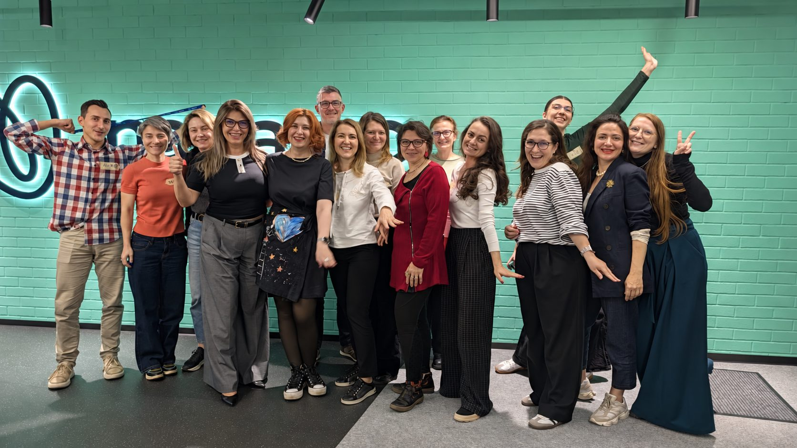
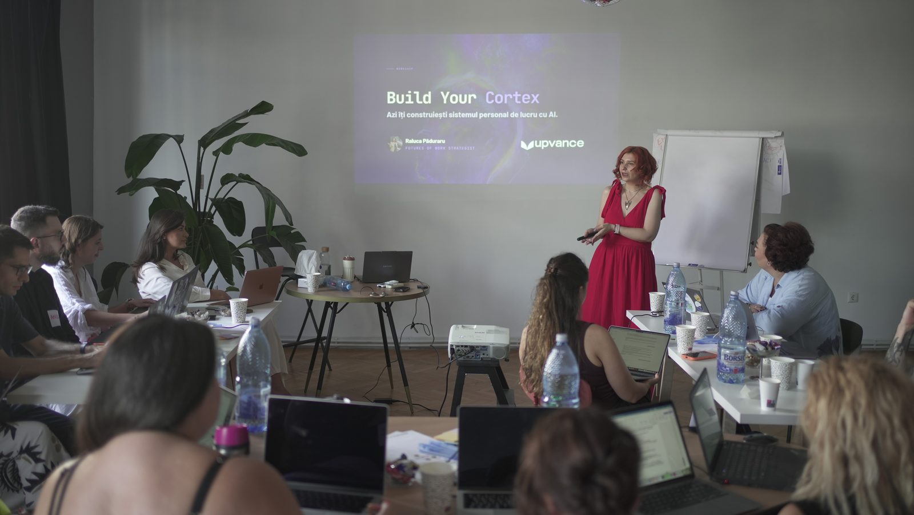
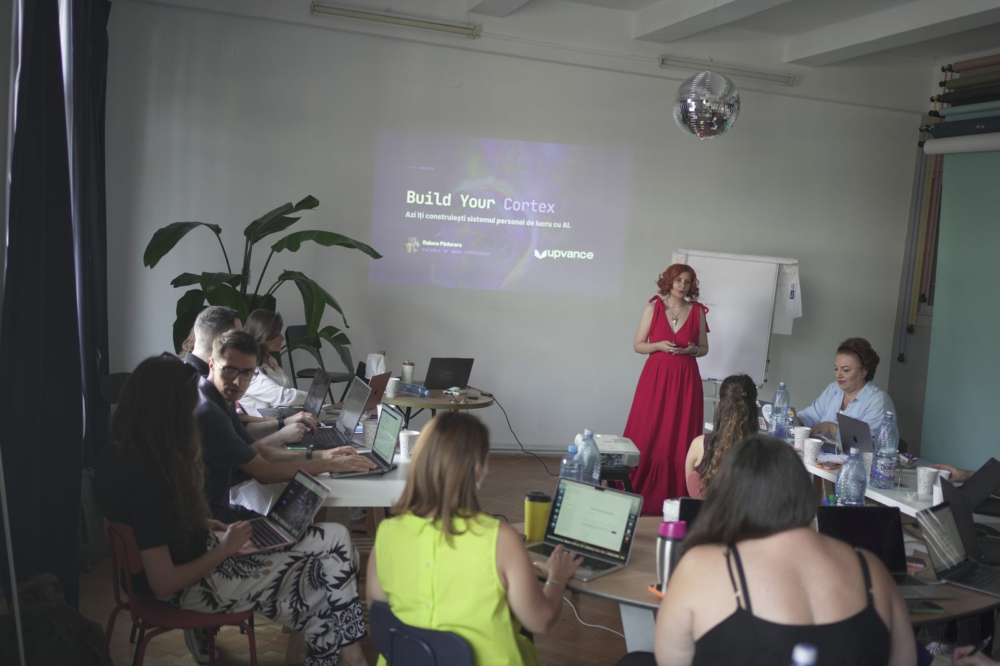
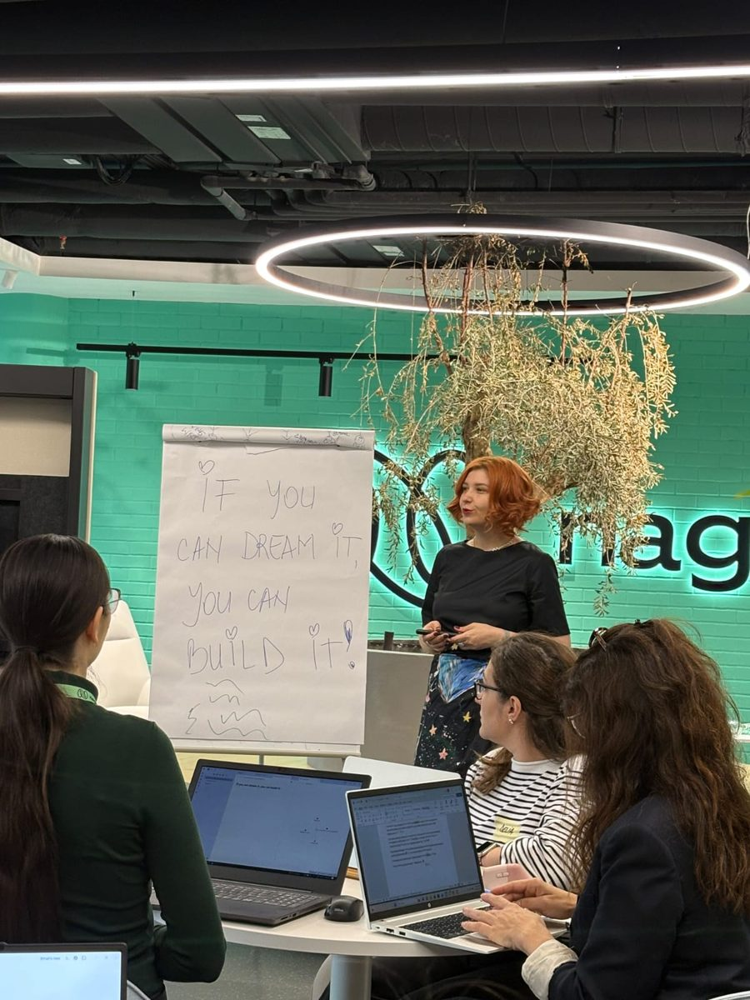
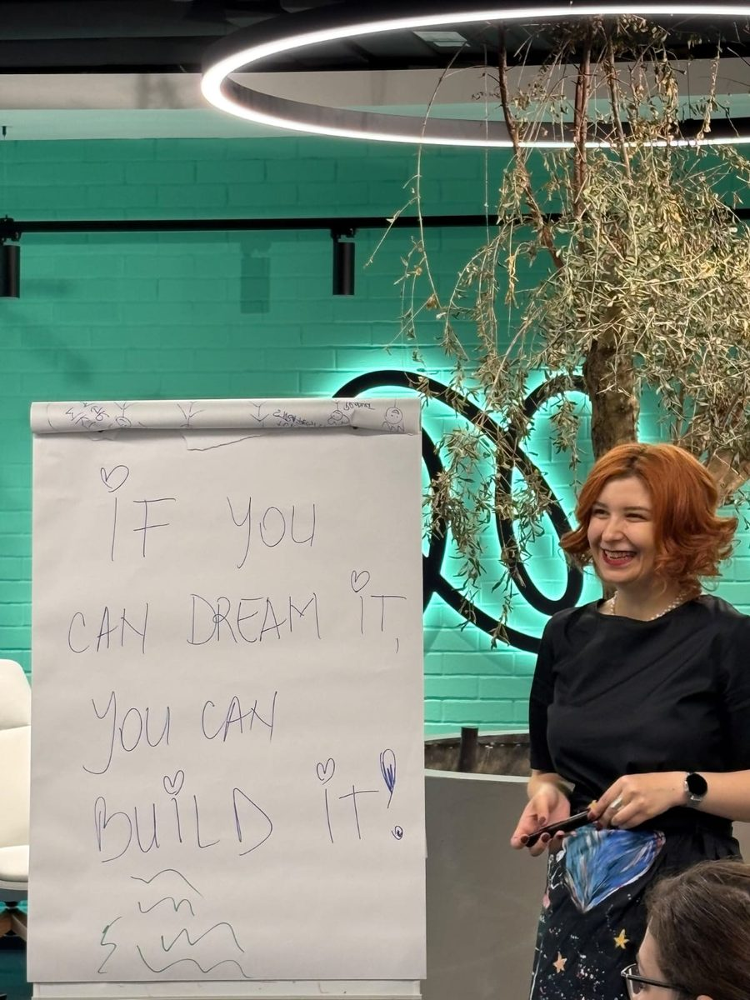
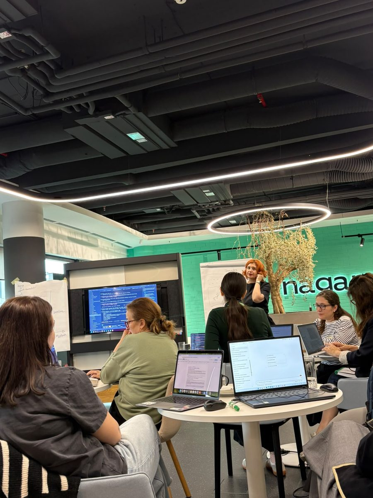
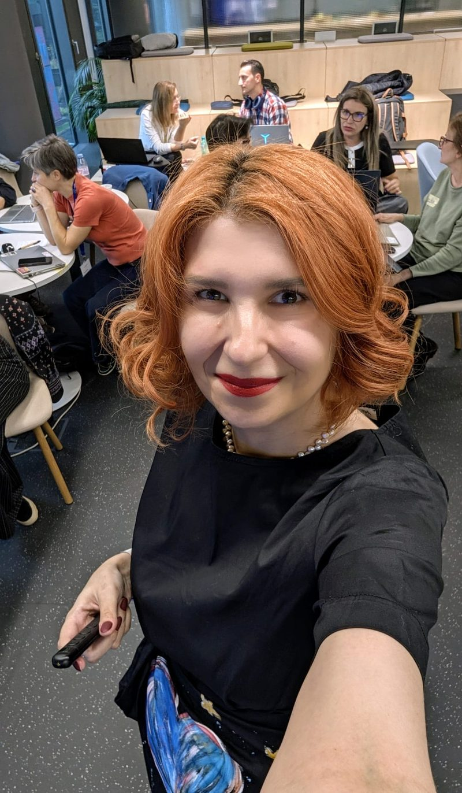
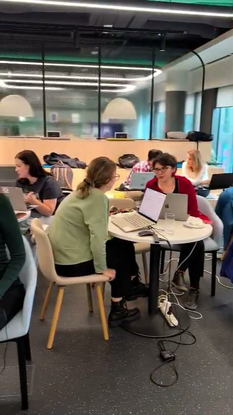
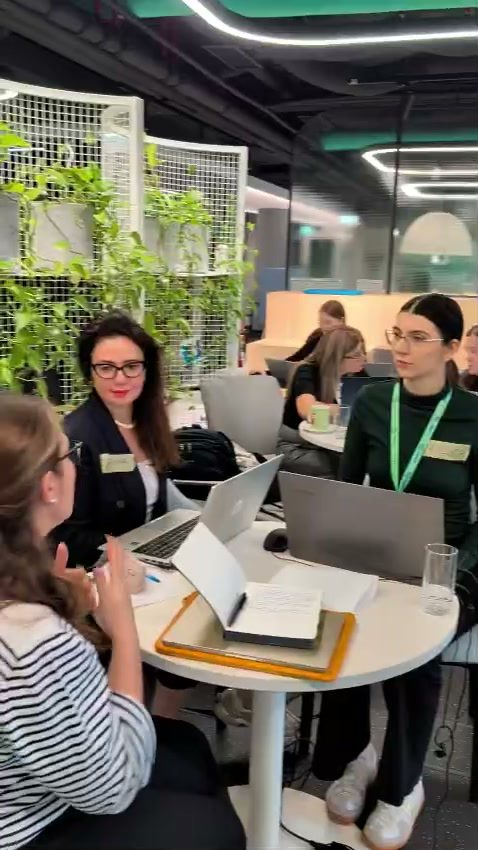

2027BUILD YOUR CORTEX
Fii CEO-ul propriei echipe AI.
Un Cortex e sistemul tău personal de lucru cu AI. Îți cunoaște obiectivele și știe regulile pe baza cărora lucrezi. Are acces la informațiile cu care lucrezi zi de zi și înțelege cum te poate ajuta.
Înscrie-te pe lista de așteptareÎți construiești sistemul personal de lucru cu AI și pleci cu el funcțional, antrenat pe munca ta.

2 ediții, același rezultat
Ediția 1 · 6 august 2026 · Palatul Universul
Ediția 2 · 16 octombrie 2026 · sala plină
Ediția a treia e programată estimativ pe 14 ianuarie 2027. Dacă vrei să afli primul când se deschid înscrierile, înscrie-te pe lista de așteptare.
Asistenții AI standard nu te cunosc.
Fiecare conversație e luată de la zero. Le explici de fiecare dată cine ești, cu ce te ocupi, cum gândești, ce ai mai vorbit data trecută. Și tot așa ori de câte ori o iei de la capăt. Rezultatul e că primești niște răspunsuri generice, pe care le rescrii oricum. Lucrezi pentru instrument, în loc să lucreze el pentru tine.
Un Cortex schimbă relația. E un sistem care reține contextul tău, învață din ceea ce construiți împreună și pe care-l ai mereu la îndemână. Nu mai execuți tu fiecare mic pas, ci devii CEO-ul unei mini-echipe proprii.
„AI becomes truly powerful when it's built around your own way of working.”
Andreea Copaciu, CEO g7 Marketing · participantă la prima edițieCe construiesc oamenii
3 oameni, 3 sisteme
Iată cum a arătat prima ediție prin ochii participanților.
Corina Neagu
Consultant HR senior, Leadership & HR Strategist
- A venit cu„Eu nu sunt o persoană tehnică.” Voia să-și eficientizeze recrutarea și să-și planifice mai bine banii și timpul.
- A plecat cuUn board pe care l-a pus să ia decizii, un plan pe finalul lui 2026 și pe 2027, și câțiva angajați AI.
„Am înțeles că inteligența artificială nu este un monstruleț cu colți, ci poate fi chiar prietenoasă dacă-ți dedici timp, interes să o cunoști.”
Renata Macoveanu
Graphic recorder & facilitator vizual
- A venit cuTrei exceluri cu evenimente și remindere peste remindere de follow-up, de care obosea doar imaginându-și-le.
- A plecat cuUn sistem care ține minte în locul ei cui a scris, ce a promis și cum scrie ea.
„Acum am un sistem care ține minte cui am scris, ce am promis și cum scriu eu, nu cum scrie un robot.”
Andreea Copaciu
CEO g7 Marketing
- A venit cuDorința de a lucra mai structurat, cu un sistem construit în jurul felului ei de a gândi și de a decide.
- A plecat cuUn Cortex propriu, pe care l-a pus la treabă chiar a doua zi, pe o prezentare de pitch.
„Today was my first full day putting it to work, and I was genuinely surprised by how much value it brought. It helped me move faster, think more clearly, and approach my work with better structure and context.”
Fiecare a venit cu o altă problemă și cu un alt obiectiv și fiecare a plecat cu un alt sistem. Toate la fel de performante.
Și la ediția a doua participanții au construit agenții de care aveau nevoie.
Un raport de vânzări care dura 30 de minute, gata în 5.
Un anonimizator de date, construit de o participantă singură, în aceeași zi.
„Mimi”, primul angajat AI al unei participante, cu nume propriu.
Cu ce pleci acasă
Nu pleci cu notițe și bune intenții. Pleci cu un sistem care funcționează deja, construit pentru a performa pe task-urile și obiectivele tale.
Directorul de operațiuni
Creierul de coordonare al sistemului, personalizat pe obiectivul tău. Știe ce resurse ai, încotro te îndrepți și cum să te susțină.
Angajații tăi AI
Fiecare cu fișa lui de post, gata de personalizat pe contextul tău: voce, follow-up, oferte, sinteză de surse, consiliu de perspective.
Lecția transferabilă
Înțelegi cum să gestionezi acest sistem singur și cum să construiești oricând un nou sistem pentru proiecte viitoare.
Agency = discernământ + acțiune
Îți hrănești sistemul cu surse adevărate și înveți să-i ceri socoteală, fără să accepți totul fără discernământ.
Pleci și cu pachetul complet de fișe de post și cu metodologia scrisă, ca să continui construcția acasă, în ritmul tău.
Cum arată ziua
- 9:30 – 10:00Setup asistat: instalăm și configurăm împreună sistemul, ca să intri în ziua de lucru ready to go. Te aștept la 9:30, dacă nu ești sigur că ai pregătit tot.
- 10:00 – 10:30Networking & welcome
- 10:30 – 17:30Îți construiești propriul Cortex, în 5 pași.
- 1
Vezi un sistem matur, în funcțiune.
Știi de la început exact ce construiești până seara.
- 2
Îți angajezi directorul de operațiuni.
Pornește de la pre-work-ul tău. Află obiectivele, regulile și standardele tale, ca să nu le mai explici la fiecare conversație.
- 3
Sistemul învață din materialele tale.
Îi dai documente reale și primești un prim rezultat construit pe ele.
- 4
Îți angajezi primul specialist.
Alegi un task recurent și-l transformi într-un agent care rulează automat.
- 5
Pleci cu un plan clar de acțiune.
Transformi tot ce ai experimentat la Build Your Cortex în mod de lucru curent.
Îți spun încă de pe acum: va fi o zi densă.
Se muncește serios, iar efortul nu e tehnic: stă în a-ți clarifica ție intențiile, prioritățile și criteriile, ca sistemul să le poată prelua.
Obiectivul zilei e ca până la 17:30 să-ți fi angajat directorul de operațiuni și să fi făcut onboarding-ul primului specialist integrat. Restul echipei o construiești acasă, în ritmul tău, cu materialele și metodologia pe care le primești.
„Ușor și greu în același timp, foarte insightful, instrumente clare și aplicabile, cu beneficii evidente; muncești la început destul de mult dar pe partea de clarificare intenții, criterii, etc, nu tehnic. Super investiție!”
Participant la prima ediție · formular anonimDin sală








Pentru cine e
Este pentru tine dacă:
- Ești lider, manager sau antreprenor și vrei să folosești AI ca pe un sistem propriu.
- Nu vii din zona tehnică și nu vrei să scrii cod.
- Ești dispus să depui efort ca să pleci cu un sistem care chiar lucrează pentru tine.
Nu este pentru tine dacă:
- Ești un om foarte tehnic.
- Nu ești dispus să depui efort ca să-ți construiești sistemul.
- Cauți rețete magice și soluții de-a gata.
„După workshopul ăsta am simțit că am scăpat de sindromul impostorului legat de folosirea AI.”
Participant la prima ediție · formular anonimCe-ți trebuie
- Un laptop și deschiderea de a construi în ziua respectivă.
- Claude: aplicația Claude Desktop instalată, cu un cont plătit (Pro, Max sau Enterprise).
- Sau Codex: aplicația instalată, logată cu un cont ChatGPT plătit.
Pre-work
Înainte de laborator vei primi o temă pe mail. Aceasta este extrem de importantă pentru că te ajută să decizi CE vrei să construiești, astfel ca în sală să te poți concentra pe construcția propriu-zisă a cortexului tău.
Ce au scris participanții
„Nu m-am așteptat nicio secundă să reușesc într-o zi ce nu am reușit în luni de zile.”
„Am făcut într-un workshop ce n-am reușit să fac în 2 ani.”
„Raluca a ținut o sală întreagă cu ușurința unei zeițe din Grecia antică și cu niște skill-uri tehnice serioase, deși spune despre ea că nu e tehnică.”
„Pot face lucruri concrete încă de mâine.”
„I left with the beginnings of my own AI TEAM! Different roles. Different responsibilities. Clear expectations. Skills and job descriptions.”
„Învățând să lucrez împreună cu Claude, simt că «ating cerul cu mâna».”
„this workshop wasn't just an interesting learning experience, it has already changed the way I work.”
„Când am început să pun în ordine lucrurile pe care vreau să le automatizez în firmă: facturarea dintre Stripe și FGO, emailurile și comenzile.”
„Sistemul e absolut demențial! Chiar e ce căutam și mă folosesc din plin de el.”
If you can dream it,
you can build it.
Înscrie-te pe lista de așteptare pentru ediția din ianuarie
Completează formularul ca să primești toate detaliile. Persoanele înscrise pe lista de așteptare vor afla primele unde și când va avea loc ediția 3.
- Când14 ianuarie 2027 (dată estimată), de la 9:30 la 17:30. Data o confirm celor de pe listă până la finalul lui noiembrie.
- Setup9:30–10:00, opțional. Configurăm împreună sistemul, ca să începi ziua de lucru cu tot pregătit.
- UndeBucurești.
- LocuriLimitate. Se ocupă în ordinea efectuării plăților.
Află primul când se deschid înscrierile.
Gata, ești pe listă!
Mailul cu detaliile a plecat spre tine. Verifică și folderul de spam.
Știi pe cineva care ar vrea să-și construiască propriul Cortex? Trimite-i link-ul.
Întrebări frecvente
E un curs de prompting?
E un workshop de construcție. Pleci cu un sistem care rămâne al tău: directorul de operațiuni, primul specialist și materialele tale organizate.
Trebuie să fiu tehnic?
Nu. Sistemul se construiește prin conversație, fără cod. Efortul stă în a-ți clarifica obiectivele și criteriile.
Ce cont îmi trebuie?
Merge pe Claude sau pe Codex, cum lucrezi deja. Pentru Claude: aplicația Claude Desktop instalată, cu un cont plătit (Pro, Max sau Enterprise). Pentru Codex: aplicația instalată, logată cu un cont ChatGPT plătit.
Ce am de făcut înainte?
Pre-work-ul, primit pe email. Cine nu e sigur că a instalat tot vine la 9:30, la setup.
Pot primi factură pe firmă?
Da. Completezi CUI-ul la plată, iar de factură mă ocup personal.
Ce se întâmplă după workshop?
Pleci cu fișele de post ale specialiștilor și cu metodologia scrisă, ca să continui construcția acasă, în ritmul tău.